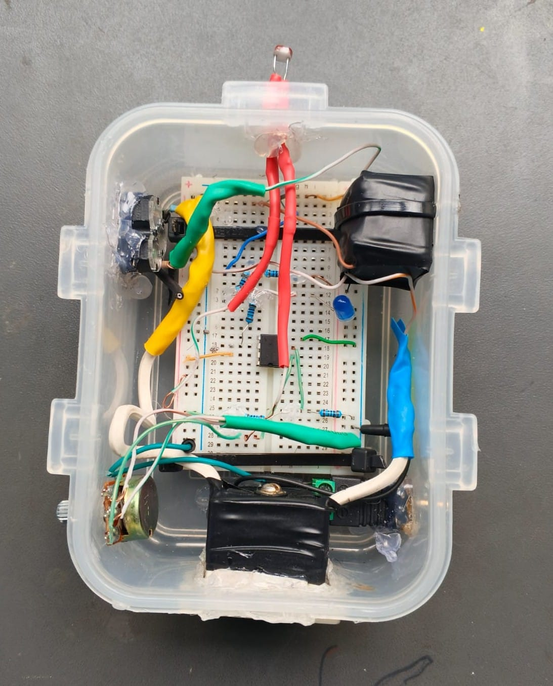

En la actualidad, los sistemas automatizados forman parte importante de la vida cotidiana. Uno de los dispositivos más utilizados en este tipo de sistemas es el sensor de luz (LDR), el cual permite detectar la intensidad luminosa del ambiente.
En este proyecto se implementa un circuito básico utilizando un sensor LDR para controlar el encendido y apagado de un LED, simulando el funcionamiento de sistemas reales como el alumbrado público automático.
Diseñar e implementar un sistema electrónico capaz de detectar cambios en la iluminación del entorno mediante un sensor LDR.
Objetivos específicos:
El LDR (Light Dependent Resistor) es un componente cuya resistencia varía según la luz.
A mayor luz → menor resistencia.
A menor luz → mayor resistencia.
Este comportamiento permite automatizar sistemas eléctricos como lámparas, sensores de seguridad y dispositivos inteligentes.

🔌 Conexión

💡 Sensor

⚙️ Funcionamiento
El circuito utiliza un divisor de voltaje con el LDR.
Cuando hay luz, el LED permanece apagado.
Cuando hay oscuridad, el LED se enciende automáticamente.
Este proyecto demuestra cómo automatizar sistemas utilizando sensores, contribuyendo al ahorro de energía.
Email: soporte@proyecto.com
Tel: 55 1234 5678